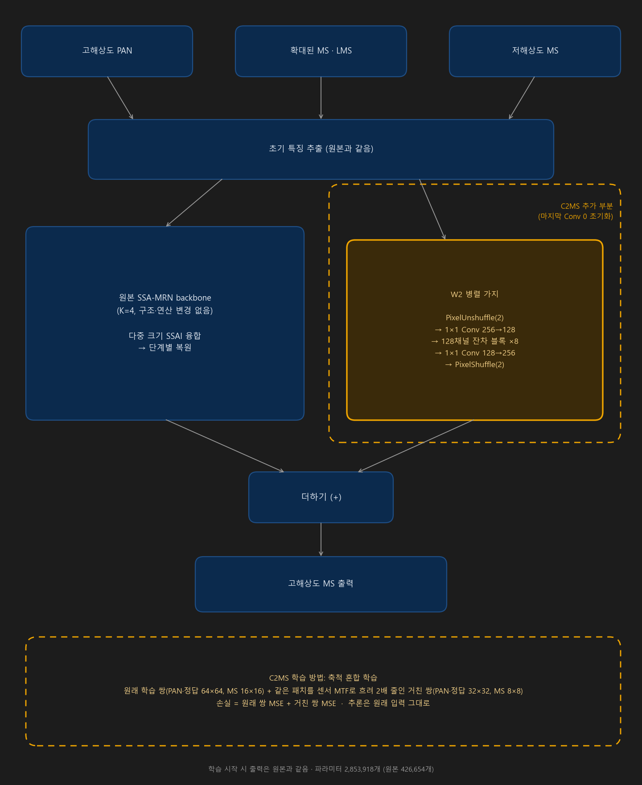
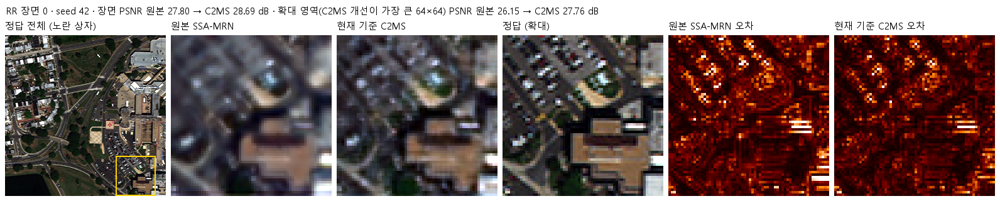

학습하지 않은 위성 센서에서도 선명도와 색을 유지하는 팬샤프닝 모델
흑백 고해상도 영상(PAN)과 저해상도 다중분광 영상(MS)을 합쳐 고해상도 컬러 영상을 복원합니다. 오픈소스 모델 SSA-MRN을 재현한 뒤, 구조와 학습 방식을 바꾼 새 기준 모델 C2MS로 성능을 개선했습니다.
- 역할
- 팀장 · 4인
- 기간
- 2026.09 — 현재
- 기준 모델
- C2MS (2026.10 채택)
연구 소개
위성은 선명한 흑백 영상과 흐린 컬러 영상을 따로 찍습니다. 팬샤프닝은 PAN의 공간 정보와 MS의 색·분광 정보를 합쳐 선명하면서 색도 정확한 고해상도 MS를 만드는 작업입니다.
SSA-MRN 재현
PAN·LRPAN·LMS에서 특징을 뽑아 전체·절반·1/4 크기에서 밴드별로 융합(SSAI)하고, 작은 크기부터 복원하는 원본 모델을 재현해 비교 기준으로 삼았습니다.
가설 → 실험 → 판정
validation으로 후보를 고르고 실제 test의 RR 지표(PSNR·SAM·ERGAS)로 개선 여부를 판정합니다. 같은 시드의 대조군과 짝지어 비교합니다.
네 개의 위성 센서
QuickBird(QB)·GaoFen-2(GF2)·WorldView-3(WV3)로 학습하고, 학습하지 않은 WorldView-2(WV2)에 적용해 일반화도 확인했습니다.
기준 모델 교체 규칙
새 후보가 기준 모델이 되려면 3시드 이상에서 개선이 확인되어야 합니다. C2MS도 이 기준을 통과해 채택했습니다.
기준 모델 C2MS
병렬 가지 + 축척 혼합 학습
W2 병렬 가지. 원본 구조는 그대로 두고, 초기 특징에서 갈라지는 가지를 더했습니다. 해상도를 절반으로 접고(PixelUnshuffle) 128채널 잔차 블록 8개를 거친 뒤 다시 펼쳐 원본 backbone의 출력에 더합니다. 파라미터는 원본 426,654개에서 2,853,918개로 늘었습니다.
축척 혼합 학습. 병렬 가지만 붙였을 때는 RR PSNR이 크게 올랐지만, 한 단계 더 거친 시험(RR2)에서 성능이 무너졌습니다. 원인을 진단해 보니 축척에 따라 세부를 넣는 세기가 맞지 않았습니다. 그래서 같은 패치로 만든 2배 거친 학습 쌍을 원래 학습 쌍과 함께 학습해 이 약점을 없앴습니다. 추론 입력은 원본과 같습니다.
채택. 2026-10-21 QB 3시드(42·43·44) 모두 개선을 확인해 팀 결정으로 채택했고, 다음 날 GF2·WV3·WV2에서도 3시드 모두 원본 대비 개선을 확인했습니다.

C2MS까지의 과정
- 단계 0원본 SSA-MRN 재현K=4를 연구 기본값으로 확정하고, 이후 모든 비교의 출발점으로 삼았습니다.
- 단계 1저해상도 병렬 가지 W2 추가RR PSNR +0.72 dB로 큰 이득이었지만 더 거친 시험(RR2)에서 성능이 나빠졌습니다.
- 단계 23시드 재현과 보정기 시도이득과 RR2 약점이 모두 재현됐고, 관측 오차 보정기로는 고쳐지지 않았습니다.
- 단계 3원인 진단학습 없이 W2 출력 세기를 줄여 보며, 축척에 맞지 않는 세부 주입 세기가 원인임을 찾았습니다.
- 단계 4축척 혼합 학습 → C2MS 채택RR2 약점을 없애고 원본 대비 QB RR +0.873 dB, 3시드 모두 개선했습니다.
- 단계 5다른 센서로 확장GF2·WV3 학습과 학습하지 않은 WV2 적용에서도 원본 대비 이득을 확인했습니다.
결과
test 20장 · 3시드 평균
같은 시드(42·43·44)의 원본 SSA-MRN과 짝지은 평균 차이입니다. 네 데이터셋 모두 20장 전부에서 RR PSNR이 원본보다 높았습니다.
| 데이터셋 | RR PSNR | RR SAM | RR ERGAS | 판정 |
|---|---|---|---|---|
| QB | +0.873 dB | −0.365° | −0.413 | 개선 |
| GF2 | +2.045 dB | −0.163° | −0.188 | 개선 |
| WV3 | +1.007 dB | −0.419° | −0.313 | 개선 |
| WV2 전이 (학습하지 않은 센서) | +0.828 dB | −0.399° | −0.426 | 참고 |
PSNR은 높을수록, SAM·ERGAS는 낮을수록 좋습니다. WV2는 WV3로 학습한 모델을 그대로 적용한 결과로, 판정에 쓰지 않는 참고 수치입니다.
처음 보는 센서에서 차이가 커집니다
학습한 센서에서는 두 모델 모두 정답에 가까워 눈으로는 차이가 잘 드러나지 않습니다. 하지만 학습하지 않은 WV2에 적용하면 원본은 흐려지고 파랑 밴드가 밝게 나와 전체가 회보라색으로 보이는 반면, C2MS는 선명도와 색을 더 잘 유지합니다.

| WV2 test · 3시드 평균 | 원본 | C2MS |
|---|---|---|
| 선명도 (출력 고주파 세기 ÷ 정답, 1이 정답) | 0.34 | 0.47 |
| 넣은 세부와 실제 세부의 상관 | 0.70 | 0.74 |
| 가장 큰 밴드의 평균 밝기 치우침 | 7.2% | 1.0% |
세 시드 모두 C2MS가 더 선명했습니다. 시드별 가장 큰 색 치우침은 원본 4.0-11.4%, C2MS 1.7-3.0%입니다.
다른 팬샤프닝 모델과 비교 (QB RR test 20장)
| 모델 | PSNR ↑ | SAM ↓ | ERGAS ↓ | Q4 ↑ |
|---|---|---|---|---|
| DCINN | 38.430 | 4.220 | 3.570 | — |
| C2MS (현재 기준, 3시드 평균) | 38.302 | 4.576 | 3.712 | 0.934 |
| HFIN | 38.247 | 4.542 | 3.813 | 0.934 |
| U2Net | 38.065 | 4.642 | 3.987 | 0.931 |
| SSA-MRN 원 논문 | 37.665 | 4.848 | 4.073 | 0.924 |
| 원본 SSA-MRN (우리 재현, 3시드 평균) | 37.429 | 4.941 | 4.124 | 0.923 |
C2MS와 원본 재현은 공식 DLPan MATLAB 코드로 재평가한 값이고, 다른 모델은 각 논문이 보고한 값입니다. 논문마다 데이터 분할·구현이 달라 공인 순위가 아닌 참고용입니다. 전체 표와 출처는 저장소 README에 있습니다.
팀
실험 기록과 코드는 모두 공개되어 있습니다
각 실험의 보고서·가중치·결과 이미지와 판정 기준을 저장소에서 확인할 수 있습니다.